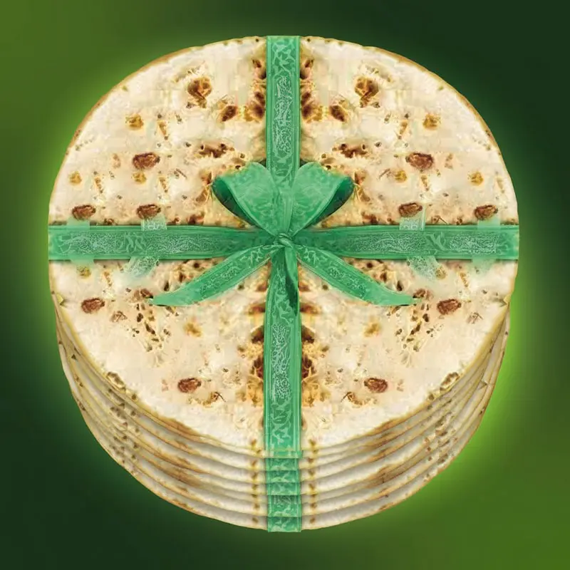
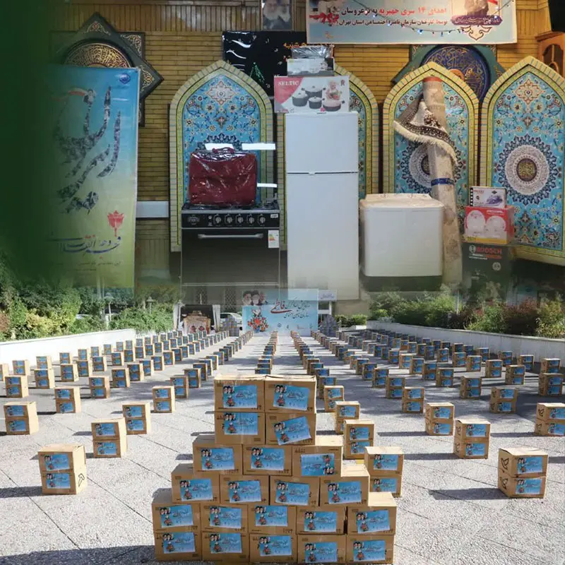

درگاه پرداخت گروه جهادی بسیج — انتخاب نیت خیر
پرش به محتوا
برای مشاهده نیات خیر، روی عنوان بزنید
⌄


Commissioned by the Basij of the Social Security Organization
به سفارش و همت هیأت اندیشهورز بسیج سازمان تأمین اجتماعی